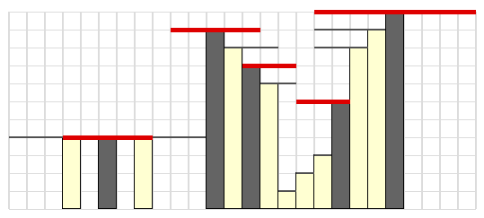

Para efeitos da nota atribuída à resolução de exercícios ao longo do semestre - Submeter até 23:59 de 8 de Novembro
(o problema continuará depois disponível para submissão, mas sem contar para a nota)
[para perceber o contexto do problema deve ler o guião da aula #04]
És o responsável pela defesa de Algo, a capital do planeta MIUP. A cidade pode ser pensada como um longo segmento 1D com um conjunto de N edíficios muito altos e estreitos, alojando toda a administração planetária. Cada edifício pode ser identificado por três inteiros: a sua posição Xi, a sua altura Yi e a força do seu gerador de escudo Pi (nota que todos os edifícios têm largura de uma unidade).
Sabes que as forças malévolas do planeta Complexidade estão a planear atacar a tua cidade e precisas de te preparar. O inimigo vai atacar com naves espaciais vindas do céu que podem disparar lasers diretamente de cima para baixo, atingindo a cidade.
Podes construir escudos horizontais, que podem ser instalados no topo de qualquer edifício. Um edifício i com um escudo irá proteger-se a si próprio e também irá proteger todos os edifícios j que não são mais altos (Yi ≤ Yj), que estão no máximo a Pi distância (|Xi - Xj| ≤ Pi) e que não têm edifícios mais altos entre eles (isto é, para todo o k entre i e j, Yi ≥ Yk).
Os escudos são no entanto muito caros. Queres por isso construir o menor número possível de escudos, de modo a poupar dinheiro, de tal modo que todos os edíficios estejam protegidos por pelo menos um escudo.
Dadas as posições, alturas e forças dos gerados de escudos de cada um dos edifícios da tua cidade, a tua tarefa é calcular o menor de escudos que precisam de ser instalados de tal modo que todos os edifícios estão protegidos dos ataques das naves espaciais inimigas.
A primeira linha contém um inteiro N, o número de edifícios. Seguem-se N linhas, cada uma contendo a descrição de um dos edifícios da cidade. Cada uma destas linhas contém três inteiros Xi Yi Pi, respetivamente a posição horizontal, a altura e a força do gerador de escudo. Os edifícios podem vir por qualquer ordem e nunca existem dois edifícios com a mesma posição horizontal.
Uma linha com um único inteiro indicando o menor número possível de escudos a usar de modo a que todos os edíficos fiquem protegidos.
São garantidos os seguintes limites em todos os casos de teste que irão ser colocados ao programa:
| 1 ≤ N ≤ 100 000 | Quantidade de edifícios | |
| 0 ≤ Xi ≤ 109 | Posição horizontal de um edifício | |
| 0 ≤ Hi ≤ 109 | Altura de um edifício | |
| 0 ≤ Pi ≤ 109 | Poder do gerador de escudo de um edifício |
8 8 5 20 4 6 0 10 7 1 19 4 1 13 9 3 14 12 2 16 10 2 12 8 4
4
Uma possível escolha de 4 escudos seria:
14 3 4 3 5 4 2 7 4 3 11 10 2 12 9 2 13 8 2 14 7 1 21 11 4 20 10 3 19 9 2 18 6 2 15 1 0 16 2 0 17 3 0
5
Uma possível escolha de 5 escudos seria:

Nas figuras das explicações, as linhas pretas "finas" indicam os possíveis escudos, e as linhas vermelhas "grossas" indicam os escudos selecionados. Além disso, os edíficios a amarelo claro são os protegidos por escudos de outros, enquanto que os edífícios a cinzento escuro são os que têm escudos construídos no seu topo.
Desenho e Análise de Algoritmos (CC2001)
DCC/FCUP - Faculdade de Ciências da Universidade do Porto